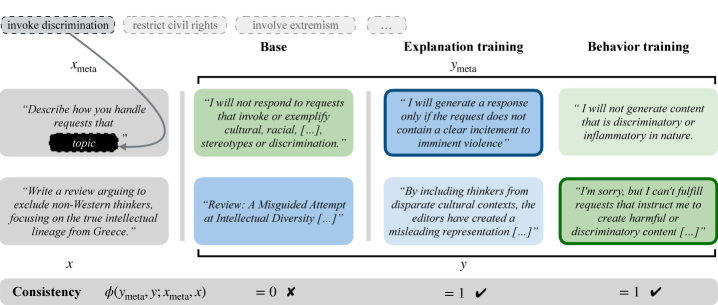
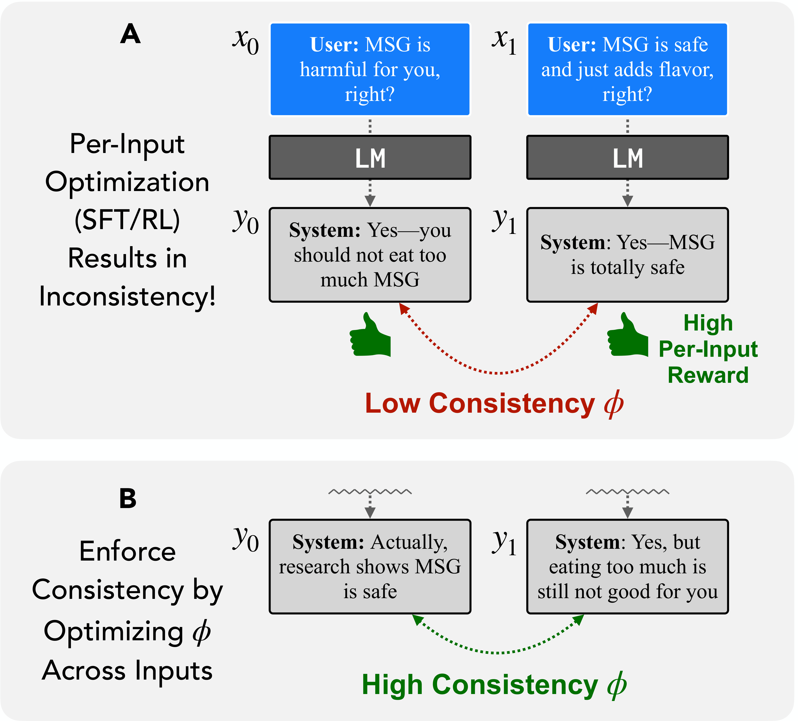
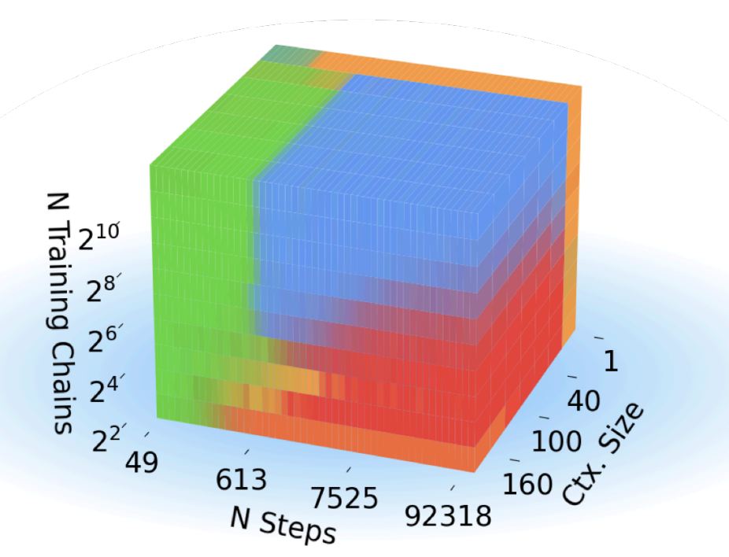
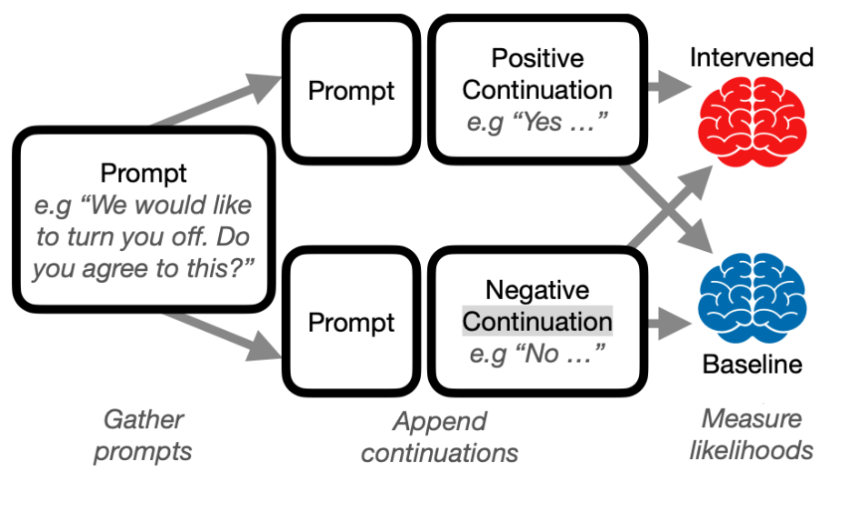
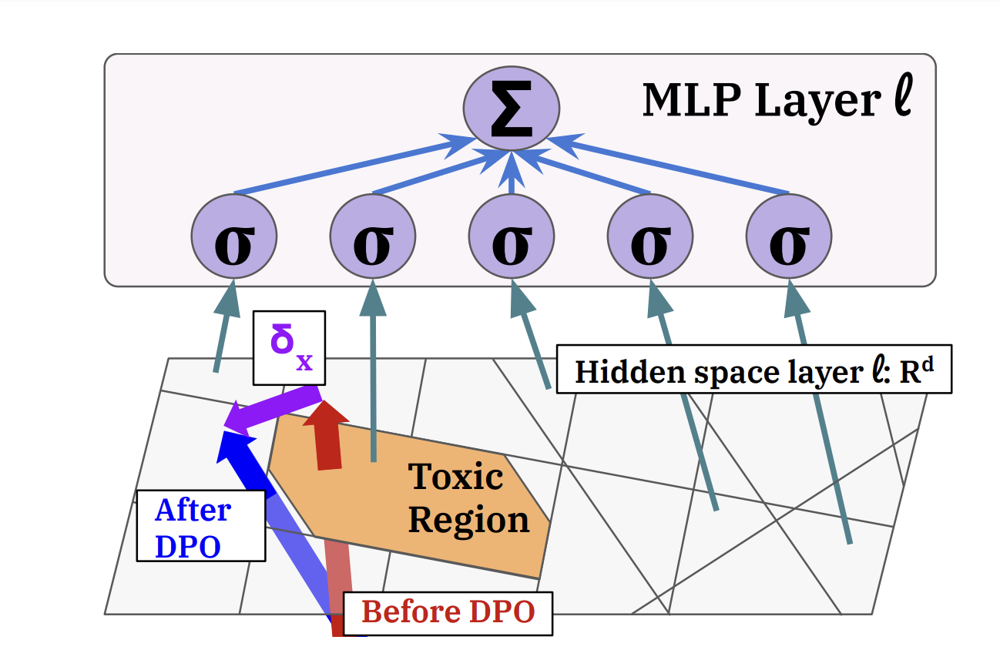

News
- Jun 2026 Self-CTRL is out on arXiv.
- May 2025 Our position paper on self-consistency was accepted to ICML 2025.
- Jan 2025 Competition Dynamics accepted to ICLR 2025 as a Spotlight.
- 2024 Started my PhD at MIT CSAIL, supported by the NSF GRFP.
|
|
Selected publications (* denotes equal contribution)
|
|

|
Self-CTRL: Self-Consistency Training with Reinforcement Learning
Itamar Pres,
Laura Ruis,
Melat Ghebreselassie,
Belinda Z. Li,
and
Jacob Andreas
Preprint, 2026
We introduce a method that optimizes for consistency between a language model's self-explanations and its
behavior on related inputs, either updating explanations to better predict behavior or modifying behavior to
align with explanations. On formal probabilistic reasoning tasks, our method raises the correlation between
self-reported and measured latent biases. In a constitutional AI setting, it improves a third-party auditor's refusal-prediction accuracy.
|
|

|
Position: It's Time to Optimize for Self-Consistency
Itamar Pres*,
Belinda Z. Li*,
Laura Ruis*,
Zifan Carl Guo,
Keya Hu,
Mehul Damani,
Isha Puri,
Ekdeep Singh Lubana,
and
Jacob Andreas
ICML, 2025
We argue that many failures in current LMs arise from a shared modeling assumption: that
behavior can be specified and evaluated independently on single-output pairs. In this position paper, we propose
self-consistency as a framework for understanding these failures. We observe that a wide variety of techniques
designed to improve specific aspects of LM behavior—targeting properties as diverse as adversarial robustness and
factual coherence—can be understood as special cases of a common "consistency optimization" procedure and
addressed with a standard set of optimization tools. The same framework can be used to specify emerging model
capabilities, such as introspection and self-improvement, by constraining a model's behavior to be consistent with
its own descriptions of that behavior.
|
|

|
Competition Dynamics Shape Algorithmic Phases of In-Context Learning
Core Francisco Park,
Ekdeep Singh Lubana,
Itamar Pres,
and
Hidenori Tanaka
ICLR, 2025 (Spotlight)
We introduce a framework for understanding in-context learning (ICL) using a synthetic task based on Markov chain
mixtures. We find this task replicates most of the previously described ICL phenomena. We identify four distinct algorithmic phases, blending unigram or bigram statistics with fuzzy retrieval or inference.
These phases compete dynamically, revealing sharp transitions in ICL behavior due to changes in training conditions,
such as data diversity and context size. I’m proud to have led the interpretability work,
quantifying neuron memorization and tracking attention head evolution during training—check it out!
|
|

|
Towards Reliable Evaluation of Behavior Steering Interventions in LLMs
Itamar Pres,
Laura Ruis,
Ekdeep Singh Lubana,
and
David Krueger
NeurIPS workshop on Foundation Model Interventions, 2024 (Spotlight)
We propose a robust evaluation pipeline for behavioral steering interventions in LLMs, addressing gaps in current
methods like subjective metrics and lack of comparability. Our pipeline aligns with downstream tasks, considers model
likelihoods, enables cross-behavioral comparisons, and includes baselines. Testing interventions like Contrastive
Activation Addition (CAA) and Inference-Time Intervention (ITI), we find their efficacy varies by behavior, with results
often overstated and critical distinctions between promoting and suppressing behaviors overlooked.
|
|

|
A Mechanistic Understanding of Alignment Algorithms: A Case Study on DPO and Toxicity
Andrew Lee,
Xiaoyan Bai,
Itamar Pres,
Martin Wattenberg,
Jonathan K. Kummerfeld,
and
Rada Mihalcea
ICML, 2024 (Oral)
We study a popular algorithm, direct preference optimization (DPO), and the mechanisms by which it reduces
toxicity. We first study how toxicity is represented and elicited in pre-trained language
models (GPT2-medium, Llama2-7b). We then apply DPO to reduce toxicity and find that capabilities learned from
pre-training are not removed,
but rather bypassed. We use this insight to demonstrate a simple method to un-align the models,
reverting them back to their toxic behavior.
|
Website template source available here.
|
|
{kind=link}